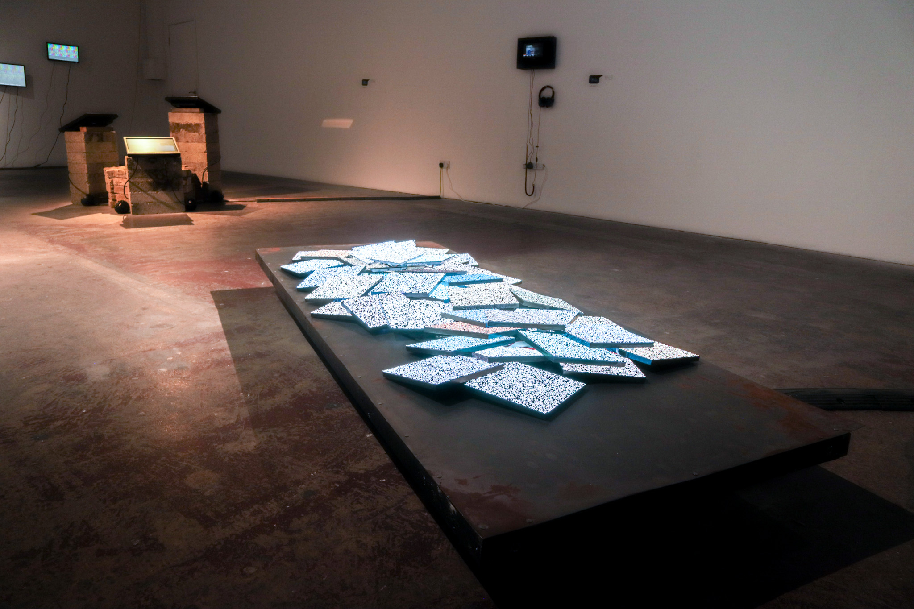

The Place Where It's Buried - 2025
Led Panels, Steel
Pannels and words collapsed into themselves
A computational poem-based sculpture, part of the show BitRot that I organised and curated, and the inaugural group show for the Phreaking collective that I am a founder and member of. More about the collective at Phreaking.co.uk
This work played with the show's theme BitRot, the slow degradation of digital data, files decaying and hard drives corrupting, and its sister term Bed Rot, the erosion of self through the digital. The poem, and namesake for the work, written in a state of manic bed rot, is as common for me, obfuscated and hidden throughout the work, though hardware and software reading the whole poem is intentionally obtuse.
Running on a 42 x 64 x 2-pitch LED matrix panel, the kind used in volumes and billboards, and 8 Adafruit microcontrollers, all plugged into a Mac mini. The program running it, Amalgo.py, is a custom project that has been growing from previous panels projects now made into a full suite for matrix control. Featuring a GUI, panel control panel, serial mapping, and timeline control. This was vital to be able to pace the work properly and allow for moments of calm and intensity, giving some patterns space to breathe. The other main use of this software was to let me painstakingly align each panel so when called on they could all show one cohesive image despite being randomly placed.